- Where we are headed (what ggprop.test delivers)
- {ggprop.test} is teaching ‘mvp’ (minimum viable package) that translates the visual logic of the prop test to ggplot2.
- Enough wind up: Back to exploring the prop test
- Data and Scenarios
- Visualizing raw data
- Calc and Viz the Proportion, allowing null to be visualized
- Interlude: What individual outcomes would we observe under null hypothesis?
- Distributions for the Null: What collections of hypothetical outcomes could we observe under null hypothesis?
- Using prop.test to just do all this for me 🙃🚀
- Part II. difference in two proportions.
- Visualize raw data
- Interlude: What might have happened under the null (disassociation)
- Just use prop test…
- Minimal Packaging
library(ggprop.test)Where we are headed (what ggprop.test delivers)
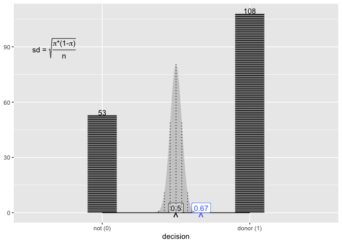
If we discuss each of the snapshot points, we could write something like this:
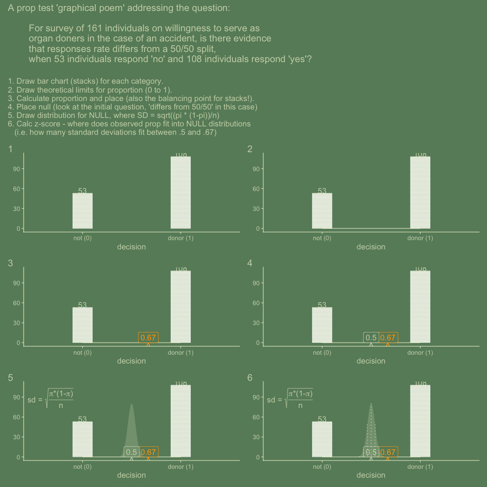
{ggprop.test} is teaching ‘mvp’ (minimum viable package) that translates the visual logic of the prop test to ggplot2.
Motivation for ggproptest and friends.
‘Telling a story with data’ is a popular idea. Let’s hear from some folks on data storytelling:
The book is meant as a guide to making visualizations that accurately reflect the data, tell a story, and look professional. - Clause Wilke in Fundamentals of Data Visualization, I’m focusing on visual design and storytelling within our organization. – Will Chase’s introduction for ‘The Glamour of Graphics’ talk 2020
Companies like Story Telling with Data and Building Stories with Data put this idea front and center to their missions.
However, the ‘data storytelling’ tends to be focused on reaching broad audiences, communicating statistical summaries (rather than trains-of-thought), and compelling complete plots. 📊
{ggprop.test} and friends, in contrast, are an attempt to capture the statistical stories that are told in words or and with visual schema all the time in classrooms, but don’t yet have translations to code. Notably these statistical narratives can also be compellingly told with applets, and ggprop.test’s narratives take much inspiration from how you might step through logic with highly acclaimed Introduction to Statistical Investigation and the Rossman-Chance applets https://www.isi-stats.com/. For convenience and usability with the ISI curriculum, many of the example datasets and scenarios are from the ISI collection.
{ggprop.test} exists to allow instructors and students to engage with the logic of statistical tests and techniques, often presented step-by-step on a chalkboard 🧑🏫 in a class room, but now also programmatically!
Which we don’t aim to replace the chalkboard/paper 📝 experience but compliment it —- it’s the inspiration for this project. See New approaches to light-weight ‘geom’ (layer) extension https://evamaerey.github.io/mytidytuesday/2024-10-29-asa-cowy-fall-2024/asa-cowy-fall-2024.html#22)
Having tools like ggprop.test might mean that instead of using the logic a handful of times for a handful of examples, student and instructors might walk through this logic large number of times - becoming not just familiar with the logic, but fluent with the visual, statistical story.
Under the hood, ggplot2 extension is used so that individual concepts can be delivered in both a semantic and visual way.
An introductiong to packaging requirements via ggprop.test
{ggprop.test} is an ‘mvp’ (a minimal viable product/package). This type of package identifies the minimum required to deliver functionality, but stops short of putting in additional work that might be required to get a package to CRAN and doesn’t adhere to all of packaging best practices, noting that student feedback and might lead to pretty dramatic changes and rewrites.
In our Spring 2026 class, we’ll pull back the curtain on package a tad, by having Let’s have a look at the ‘mvp’ ggprop.test structure (which does have a lot in common with full-blown CRAN-ready packages): https://github.com/EvaMaeRey/ggprop.test
fs::dir_tree()
#> .
#> ├── 2026_04_29_flipbooks
#> │ ├── cliprcode.R
#> │ ├── current_image.Rdata
#> │ └── temp_copied.qmd
#> ├── DESCRIPTION
#> ├── NAMESPACE
#> ├── R
#> │ ├── collections_null.R
#> │ ├── compute_prop_viz.R
#> │ ├── create_prop_data.R
#> │ ├── data_shuffle_var.R
#> │ ├── facet_align.R
#> │ ├── gen_under_null.R
#> │ ├── geom_prop_diff.R
#> │ ├── raw_data_viz.R
#> │ └── statexpress.R
#> ├── README.Rmd
#> ├── README.md
#> ├── README_files
#> │ └── figure-gfm
#> │ ├── prop_poem-1.png
#> │ ├── test_interlude-1.png
#> │ ├── test_interlude-2.png
#> │ ├── test_interlude-3.png
#> │ ├── test_interlude-4.png
#> │ ├── test_interlude-5.png
#> │ ├── unnamed-chunk-10-1.png
#> │ ├── unnamed-chunk-10-2.png
#> │ ├── unnamed-chunk-10-3.png
#> │ ├── unnamed-chunk-10-4.png
#> │ ├── unnamed-chunk-10-5.png
#> │ ├── unnamed-chunk-10-6.png
#> │ ├── unnamed-chunk-10-7.png
#> │ ├── unnamed-chunk-10-8.png
#> │ ├── unnamed-chunk-11-1.png
#> │ ├── unnamed-chunk-11-2.png
#> │ ├── unnamed-chunk-11-3.png
#> │ ├── unnamed-chunk-11-4.png
#> │ ├── unnamed-chunk-11-5.png
#> │ ├── unnamed-chunk-11-6.png
#> │ ├── unnamed-chunk-11-7.png
#> │ ├── unnamed-chunk-11-8.png
#> │ ├── unnamed-chunk-12-1.png
#> │ ├── unnamed-chunk-12-2.png
#> │ ├── unnamed-chunk-13-1.png
#> │ ├── unnamed-chunk-13-2.png
#> │ ├── unnamed-chunk-14-1.png
#> │ ├── unnamed-chunk-14-2.png
#> │ ├── unnamed-chunk-14-3.png
#> │ ├── unnamed-chunk-14-4.png
#> │ ├── unnamed-chunk-14-5.png
#> │ ├── unnamed-chunk-14-6.png
#> │ ├── unnamed-chunk-14-7.png
#> │ ├── unnamed-chunk-14-8.png
#> │ ├── unnamed-chunk-15-1.png
#> │ ├── unnamed-chunk-15-2.png
#> │ ├── unnamed-chunk-15-3.png
#> │ ├── unnamed-chunk-16-1.png
#> │ ├── unnamed-chunk-16-2.png
#> │ ├── unnamed-chunk-16-3.png
#> │ ├── unnamed-chunk-17-1.png
#> │ ├── unnamed-chunk-17-2.png
#> │ ├── unnamed-chunk-17-3.png
#> │ ├── unnamed-chunk-18-1.png
#> │ ├── unnamed-chunk-18-2.png
#> │ ├── unnamed-chunk-18-3.png
#> │ ├── unnamed-chunk-19-1.png
#> │ ├── unnamed-chunk-19-2.png
#> │ ├── unnamed-chunk-19-3.png
#> │ ├── unnamed-chunk-20-1.png
#> │ ├── unnamed-chunk-20-2.png
#> │ ├── unnamed-chunk-20-3.png
#> │ ├── unnamed-chunk-21-1.png
#> │ ├── unnamed-chunk-21-2.png
#> │ ├── unnamed-chunk-21-3.png
#> │ ├── unnamed-chunk-22-1.png
#> │ ├── unnamed-chunk-26-1.png
#> │ ├── unnamed-chunk-27-1.png
#> │ ├── unnamed-chunk-28-1.png
#> │ ├── unnamed-chunk-3-1.png
#> │ ├── unnamed-chunk-30-1.png
#> │ ├── unnamed-chunk-31-1.png
#> │ ├── unnamed-chunk-32-1.png
#> │ ├── unnamed-chunk-4-1.png
#> │ ├── unnamed-chunk-4-2.png
#> │ ├── unnamed-chunk-4-3.png
#> │ ├── unnamed-chunk-4-4.png
#> │ ├── unnamed-chunk-5-1.png
#> │ ├── unnamed-chunk-5-2.png
#> │ ├── unnamed-chunk-5-3.png
#> │ ├── unnamed-chunk-6-1.png
#> │ ├── unnamed-chunk-6-2.png
#> │ ├── unnamed-chunk-7-1.png
#> │ ├── unnamed-chunk-7-2.png
#> │ ├── unnamed-chunk-8-1.png
#> │ ├── unnamed-chunk-8-2.png
#> │ ├── unnamed-chunk-8-3.png
#> │ ├── unnamed-chunk-8-4.png
#> │ ├── unnamed-chunk-8-5.png
#> │ ├── unnamed-chunk-8-6.png
#> │ ├── unnamed-chunk-8-7.png
#> │ ├── unnamed-chunk-8-8.png
#> │ ├── unnamed-chunk-9-1.png
#> │ ├── unnamed-chunk-9-2.png
#> │ ├── unnamed-chunk-9-3.png
#> │ ├── unnamed-chunk-9-4.png
#> │ ├── unnamed-chunk-9-5.png
#> │ ├── unnamed-chunk-9-6.png
#> │ ├── unnamed-chunk-9-7.png
#> │ └── unnamed-chunk-9-8.png
#> ├── data
#> │ ├── data_hospital_nurse.rda
#> │ ├── data_yawning.rda
#> │ ├── dolphin_data.rda
#> │ ├── donor_data.rda
#> │ └── scissors_data.rda
#> ├── docs
#> │ ├── 404.html
#> │ ├── articles
#> │ ├── authors.html
#> │ ├── bootstrap-toc.css
#> │ ├── bootstrap-toc.js
#> │ ├── docsearch.css
#> │ ├── docsearch.js
#> │ ├── index.html
#> │ ├── link.svg
#> │ ├── news
#> │ ├── pkgdown.css
#> │ ├── pkgdown.js
#> │ ├── pkgdown.yml
#> │ ├── reference
#> │ │ └── index.html
#> │ ├── sitemap.xml
#> │ └── tutorials
#> ├── ggprop.test.Rproj
#> └── man
#> └── figures
#> ├── README-test_interlude-1.png
#> ├── README-test_interlude-2.png
#> ├── README-test_interlude-3.png
#> ├── README-test_interlude-4.png
#> ├── README-test_interlude-5.png
#> ├── README-unnamed-chunk-3-1.png
#> └── README-unnamed-chunk-4-1.pngGoal for package functions?
- ‘Erogenomics’.
- Trace a train of thought…
- Approximate the chalkboard analogue experience - and ISI storytelling
knitr::include_graphics("https://miro.medium.com/v2/resize:fit:1400/format:webp/1*hZubBVjVDcl8ZixE-WRDvA.jpeg")
knitr::include_graphics("https://images.unsplash.com/photo-1535535112387-56ffe8db21ff?q=80&w=2074&auto=format&fit=crop&ixlib=rb-4.1.0&ixid=M3wxMjA3fDB8MHxwaG90by1wYWdlfHx8fGVufDB8fHx8fA%3D%3D")
knitr::include_graphics("https://media.licdn.com/dms/image/v2/D5622AQEoFtfFtQr-GQ/feedshare-shrink_800/B56ZVsPIDMGQAg-/0/1741277660204?e=1778716800&v=beta&t=K-bChkmu9opCHJS4QZkkF9q3gs23gG8D6w4bKGCcpz8")
Enough wind up: Back to exploring the prop test
{ggprop.test} can be installed as follows…
library(remotes)
install_github("EvaMaeRey/ggprop.test")Data and Scenarios
scenario 1: organ donation
Motivating question: For survey of 161 individuals on willingness to serve as organ doners in the case of an accident, is there evidence that responses rate differs from a 50/50 split, when 53 individuals respond ‘no’ and 108 individuals respond ‘yes’?
Does the sample provide statistical evidence that there isn’t a 50-50 split in preference for donation? Or indiffernece (like people are just answering randomly because they are not paying attention). Is their answer equivelant to tossing a coin?
“https://www.isi-stats.com/isi/data/prelim/OrganDonor.txt”
library(tidyverse)
set.seed(1234)
donor_data <- rep(c("donor (1)", "not (0)"), c(108,53)) |>
fct_rev() |>
tibble(decision = _) |>
sample_frac()
head(donor_data)
#> # A tibble: 6 × 1
#> decision
#> <fct>
#> 1 donor (1)
#> 2 donor (1)
#> 3 not (0)
#> 4 donor (1)
#> 5 not (0)
#> 6 not (0)
usethis::use_data(donor_data, overwrite = T)
donor_data |>
count(decision) |>
mutate(prop = n/sum(n))
#> # A tibble: 2 × 3
#> decision n prop
#> <fct> <int> <dbl>
#> 1 not (0) 53 0.329
#> 2 donor (1) 108 0.671How can ggprop.test functions help visualize the basics of this question?
What is the proportion opting in?
scenario 2: dolphins
dolphin_data
#> # A tibble: 16 × 1
#> observed
#> <fct>
#> 1 Correct (1)
#> 2 Correct (1)
#> 3 Correct (1)
#> 4 Correct (1)
#> 5 Correct (1)
#> 6 Not Correct (0)
#> 7 Correct (1)
#> 8 Correct (1)
#> 9 Correct (1)
#> 10 Correct (1)
#> 11 Correct (1)
#> 12 Correct (1)
#> 13 Correct (1)
#> 14 Correct (1)
#> 15 Correct (1)
#> 16 Correct (1)See too. ‘Fishermen talking to dolphins’ https://www.youtube.com/watch?v=6MZqKfUMFn0
Is the US a member of the ‘Agreement on the International Dolphin Conservation Program?’ Agreement on the International Dolphin Conservation Program - https://www.state.gov/international-dolphin-conservation-program
scenario 3: Rock paper scissors
scissors_data
#> # A tibble: 20 × 1
#> thrown
#> <fct>
#> 1 not scissors (0)
#> 2 scissors (1)
#> 3 not scissors (0)
#> 4 not scissors (0)
#> 5 scissors (1)
#> 6 not scissors (0)
#> 7 not scissors (0)
#> 8 not scissors (0)
#> 9 scissors (1)
#> 10 not scissors (0)
#> 11 not scissors (0)
#> 12 not scissors (0)
#> 13 not scissors (0)
#> 14 not scissors (0)
#> 15 not scissors (0)
#> 16 not scissors (0)
#> 17 not scissors (0)
#> 18 scissors (1)
#> 19 not scissors (0)
#> 20 not scissors (0)On demand scenarios
#' @export
create_prop_data <- function(failure = "failure (0)",
success = "success (1)",
num_failure = 5,
num_success = 5,
var_name = "outcome"){
outcome <- c(failure, success) |> rep(c(num_failure, num_success)) |> sample() |> factor(levels = c(failure, success))
tibble(outcome)
}“Kissing right” example… https://www.isi-stats.com/isi/labs/lab3/lab3_1.html
‘In the actual study, Dr. Güntürkün observed 80 of the 124 couples in his sample turn to the right.’
create_prop_data() |> head()
#> # A tibble: 6 × 1
#> outcome
#> <fct>
#> 1 success (1)
#> 2 failure (0)
#> 3 failure (0)
#> 4 success (1)
#> 5 success (1)
#> 6 success (1)
create_prop_data(failure = "not kiss right (0)",
success = "kiss right (1)",
num_failure = 124-80,
num_success = 80)
#> # A tibble: 124 × 1
#> outcome
#> <fct>
#> 1 not kiss right (0)
#> 2 not kiss right (0)
#> 3 not kiss right (0)
#> 4 kiss right (1)
#> 5 kiss right (1)
#> 6 not kiss right (0)
#> 7 not kiss right (0)
#> 8 not kiss right (0)
#> 9 kiss right (1)
#> 10 kiss right (1)
#> # ℹ 114 more rows
kissing_data <- create_prop_data(failure = "not kiss right (0)",
success = "kiss right (1)",
# total of 124 minus succes cases
num_failure = 124-80,
num_success = 80)
kissing_data |>
ggplot() +
aes(x = outcome) +
geom_stack() +
geom_stack_label() +
geom_support() +
geom_prop() +
geom_prop_label() +
stamp_prop(.5) +
stamp_prop_label(.5) +
geom_normal_prop_null() +
geom_normal_prop_null_sds()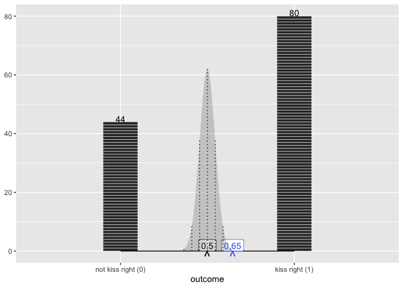
Visualizing raw data
cloning statexpress functions
Some convenience functions from {statexpress} are used, because we want this to be a bit more self-contained at this point, so we just clone them for now. statexpress is evolving and is not on CRAN.
qlayer <- function (mapping = NULL, data = NULL, geom = ggplot2::GeomPoint, stat = StatIdentity,
position = position_identity(), ..., na.rm = FALSE, show.legend = NA,
inherit.aes = TRUE)
{
ggplot2::layer(data = data, mapping = mapping, geom = geom,
stat = stat, position = position, show.legend = show.legend,
inherit.aes = inherit.aes, params = rlang::list2(na.rm = na.rm,
...))
}
qstat <- function (compute_group = ggplot2::Stat$compute_group, ...)
{
ggplot2::ggproto(NULL, Stat, compute_group = compute_group,
...)
}
qstat_panel <- function (compute_panel, ...)
{
ggplot2::ggproto(NULL, Stat, compute_panel = compute_panel,
...)
}
qstat_layer <- function (compute_layer, ...)
{
ggplot2::ggproto(NULL, Stat, compute_layer = compute_layer,
...)
}
proto_update <- function (`_class`, `_inherit`, default_aes_update = NULL, ...)
{
if (!is.null(default_aes_update)) {
default_aes <- aes(!!!modifyList(`_inherit`$default_aes,
default_aes_update))
}
ggplot2::ggproto(`_class` = `_class`, `_inherit` = `_inherit`,
default_aes = default_aes, ...)
}
qproto_update <- function (`_inherit`, default_aes_update = NULL, ...)
{
proto_update(NULL, `_inherit`, default_aes_update = default_aes_update,
...)
}And then define the functions…
# 1. layer stack of bricks
compute_group_bricks <- function(data, scales, width = .2){
data |>
dplyr::mutate(row = row_number()) |>
dplyr::mutate(y = row - .5) |>
dplyr::mutate(width = width)
}
# 2. layer label stack with count
compute_group_count <- function(data, scales){
data |>
dplyr::count(x) |>
dplyr::mutate(y = n,
label = n)
}
# 3. layer add x span
compute_balance <- function(data, scales){
data |>
dplyr::summarise(min_x = min(x),
xend = max(x),
y = 0,
yend = 0) |>
dplyr::rename(x = min_x)
}
#' @export
geom_stack <- function(...){
qlayer(geom = qproto_update(ggplot2::GeomTile, ggplot2::aes(color = "white")),
stat = qstat(compute_group_bricks),
...)
}
#' @export
geom_stack_label <- function(...){
qlayer(geom = qproto_update(ggplot2::GeomText, ggplot2::aes(vjust = 0)),
stat = qstat(compute_group_count),
...)
}
#' @export
geom_support <- function(...){
qlayer(geom = ggplot2::GeomSegment,
stat = qstat_panel(compute_balance),
...)
}
theme_minimal(paper = "grey25",
ink = "whitesmoke" |> alpha(.9),
accent = "palevioletred2" |> alpha(.9)) |>
set_theme()
donor_data |>
ggplot() +
aes(x = decision) +
geom_stack() +
geom_stack_label() +
geom_support()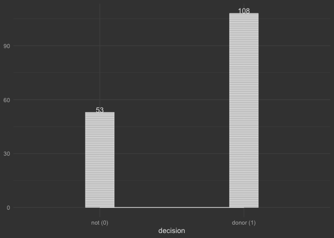
donor_base_plot <- last_plot()
dolphin_data |>
ggplot() +
aes(x = observed) +
geom_stack() +
geom_stack_label() +
geom_support()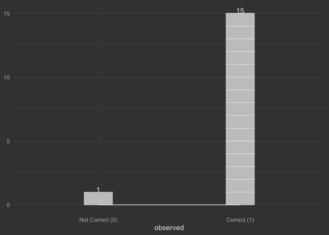
dolphins_base_plot <- last_plot()
scissors_data |>
ggplot() +
aes(x = thrown) +
geom_stack() +
geom_stack_label() +
geom_support()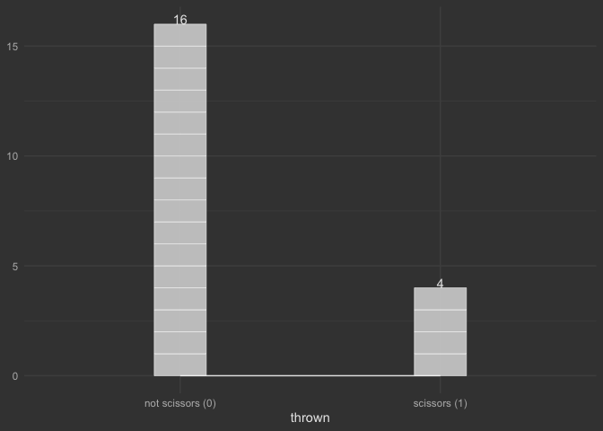
scissors_base_plot <- last_plot()Calc and Viz the Proportion, allowing null to be visualized
# 4. layer add balancing point
compute_xmean_at_y0 <- function(data, scales){
data |>
dplyr::summarise(x = mean(x),
y = 0,
label = "^")
}
# 5. layer add balancing point value label
compute_xmean_at_y0_label <- function(data, scales){
data |>
dplyr::summarise(x = mean(x),
y = 0,
label = after_stat(round(x, 2)))
}
# 6. Add 'point' for asserted balancing point (null)
compute_panel_prop_asserted <- function(data, scales, value = .5){
# stamp type layer - so ignore input data
data.frame(y = 0,
x = value,
label = "^"
)
}
# 6. Add label for asserted balancing point (null)
compute_panel_prop_asserted_label <- function(data, scales, value = .5){
# stamp type layer - so ignor input data
data.frame(y = 0,
x = value,
label = round(value, 2)
)
}
scale_x_prop <- function(...){
scale_x_discrete(palette = scales::pal_manual(0:1), ...)
}
#' @export
geom_prop <- function(...){
list(
qlayer(geom = qproto_update(ggplot2::GeomText,
ggplot2::aes(size = 6, vjust = 1,
color = ggplot2::from_theme(colour %||% accent))),
stat = qstat_panel(compute_xmean_at_y0),
...),
scale_x_prop()
)
}
#' @export
geom_prop_label <- function(...){
qlayer(geom = qproto_update(ggplot2::GeomLabel,
ggplot2::aes(fill = ggplot2::from_theme(colour %||% paper),
color = ggplot2::from_theme(colour %||% accent),
label.size = NA, vjust = 0)),
stat = qstat_panel(compute_xmean_at_y0_label),
...)
}
#' @export
stamp_prop <- function(value = .5, ...){
# qlayer(geom = qproto_update(ggplot2::GeomText,
# ggplot2::aes(size = 6,
# vjust = 1,
# color = ggplot2::from_theme(colour %||% ink))),
# stat = qstat_panel(compute_panel_prop_asserted),
# data = data.frame(x = 1),
# inherit.aes = FALSE,
# ...
# )
annotate(geom = qproto_update(ggplot2::GeomText,
ggplot2::aes(size = 6,
vjust = 1,
color = ggplot2::from_theme(colour %||% ink))),
x = value, y = 0, label = "^")
}
#' @export
stamp_prop_label <- function(value = .5, ...){
# qlayer(geom = qproto_update(ggplot2::GeomLabel,
# ggplot2::aes(fill = ggplot2::from_theme(colour %||% paper),
# label.size = NA, vjust = 0,
# color = ggplot2::from_theme(colour %||% ink))),
# stat = qstat_panel(compute_panel_prop_asserted_label),
# data = data.frame(x = 1),
# inherit.aes = FALSE,
# ...
# )
GeomLabelExtra <- qproto_update(ggplot2::GeomLabel,
ggplot2::aes(fill = ggplot2::from_theme(colour %||% paper),
label.size = NA, vjust = 0,
color = ggplot2::from_theme(colour %||% ink)))
annotate(geom = GeomLabelExtra,
x = value,
y = 0,
label = value)
}
donor_base_plot +
geom_prop() +
geom_prop_label() +
stamp_prop() +
stamp_prop_label()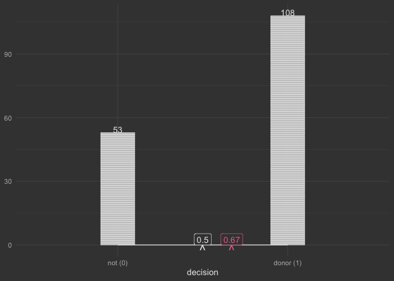
donors_balance_plot <- last_plot()
dolphins_base_plot +
geom_prop() +
geom_prop_label() +
stamp_prop() +
stamp_prop_label()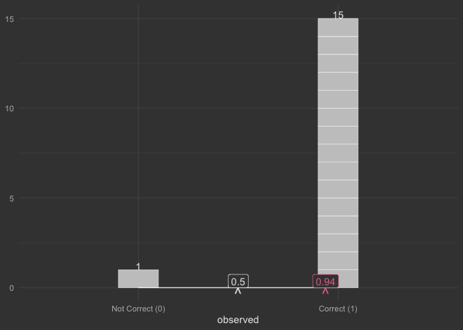
dolphins_balance_plot <- last_plot()
scissors_base_plot +
geom_prop() +
geom_prop_label() +
stamp_prop(.33) +
stamp_prop_label(.33)
scissors_balance_plot <- last_plot()Interlude: What individual outcomes would we observe under null hypothesis?
#' @export
to_synthetic <- function(x, prob = .5){
levels(x) |> # take two
sample(size = length(x),
replace = T,
prob = c(1-prob, prob)) |>
# restore category ordering
factor(levels = levels(x))
}
#' @export
data_add_synth <- function(data, var, prob = .5){
x <- data |>
pull({{var}})
generated <- to_synthetic(x, prob = prob)
data |>
mutate(synthetic = generated)
}
#
# #' @export
# x_from_null <- function(data = NULL, prob = .5) {
#
# structure(
# list(prob = prob),
# class = "x_from_null"
# )
#
# }
#
#
# #' @import ggplot2
# #' @importFrom ggplot2 ggplot_add
# #' @export
# ggplot_add.x_from_null <- function(object, plot, object_name) {
#
# xname <- plot@mapping |> as.character() |> str_remove("~")
#
# xname
#
# var <- plot$data |> pull(xname)
#
# plot$data[xname] <-
# sample(levels(var),
# size = length(var),
# replace = T, prob = c(1-object$prob, object$prob)
# ) |>
# # restore category ordering
# factor(levels = levels(var))
#
# plot + labs(x = "plausible from null") +
# stamp_prop(value = mean(var |> as.numeric()) -1 ) +
# stamp_prop_label(value = mean(var |> as.numeric()) - 1)
#
# }How many trials where we are drawing from null, before we see something as far from .5 as .67?
dolphin_data |>
data_add_synth(var = observed, prob = .5)
#> # A tibble: 16 × 2
#> observed synthetic
#> <fct> <fct>
#> 1 Correct (1) Not Correct (0)
#> 2 Correct (1) Not Correct (0)
#> 3 Correct (1) Correct (1)
#> 4 Correct (1) Not Correct (0)
#> 5 Correct (1) Not Correct (0)
#> 6 Not Correct (0) Not Correct (0)
#> 7 Correct (1) Not Correct (0)
#> 8 Correct (1) Correct (1)
#> 9 Correct (1) Not Correct (0)
#> 10 Correct (1) Correct (1)
#> 11 Correct (1) Not Correct (0)
#> 12 Correct (1) Not Correct (0)
#> 13 Correct (1) Not Correct (0)
#> 14 Correct (1) Correct (1)
#> 15 Correct (1) Correct (1)
#> 16 Correct (1) Correct (1)
dolphin_data |>
mutate(synth = to_synthetic(observed)) |>
ggplot() +
aes(x = synth) +
geom_stack() +
geom_stack_label() +
geom_prop() +
geom_prop_label() +
stamp_prop(.94) + # observed now for reference
stamp_prop_label(.94)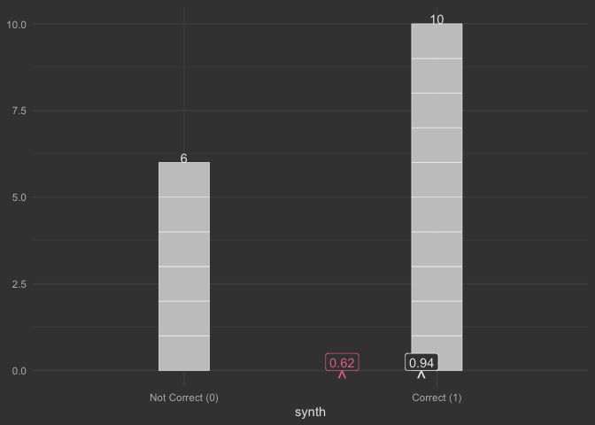
donor_data |>
mutate(synth = to_synthetic(decision)) |>
ggplot() +
aes(x = synth) +
geom_stack() +
geom_stack_label() +
geom_prop() +
geom_prop_label() +
stamp_prop(.67) + # observed now for reference
stamp_prop_label(.67) 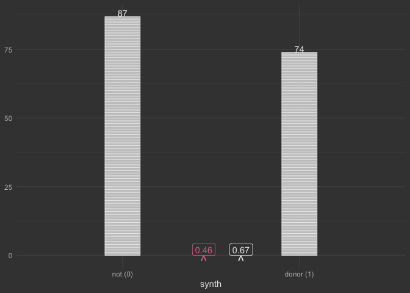
scissors_data |>
mutate(synth = to_synthetic(thrown, prob = .333)) |>
ggplot() +
aes(x = synth) +
geom_stack() +
geom_stack_label() +
geom_prop() +
geom_prop_label() +
stamp_prop(.25) + # observed now for reference
stamp_prop_label(.25) 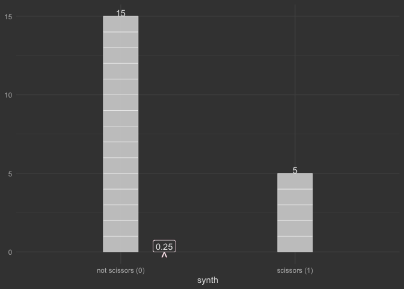
Would we reflect: “I don’t think that the null is true. It’d be extremely rare to see something as big as .67 if the null were true. The observed balance (proportion) of .67 doesn’t look consistent with a population balance of .5”
–
Term of art: “we reject the null hypothesis”
Distributions for the Null: What collections of hypothetical outcomes could we observe under null hypothesis?
# 7. normal distribution based on null and n
compute_dnorm_prop <- function(data, scales, prob = .5, dist_sds = seq(-3.5, 3.5, by = .1)
){
n <- data |> nrow()
n_max <- data |> dplyr::count(.by = x) |> dplyr::pull() |> max()
sd = sqrt(prob * (1 - prob)/n) # sd of the null distribution
q <- dist_sds * sd + prob
data.frame(x = q) |>
dplyr::mutate(height = dnorm(q, sd = sd, mean = prob)) |>
dplyr::mutate(height_max = dnorm(0, sd = sd, mean = 0)) |>
dplyr::mutate(y = .5*n*height/height_max) |> # This is a bit fragile...
dplyr::mutate(xend = x,
yend = 0) |>
# @teunbrand ggplot2::GeomArea$setup_data() requires a group column. Your panel computation does not preserve groups, but it should.
dplyr::mutate(group = 1)
}
# 8. normal distribution mean and sds based on null and n
compute_dnorm_prop_sds <- function(data, scales, prob = .5, dist_sds = -4:4){
n <- data |> nrow()
n_max <- data |> dplyr::count(.by = x) |> dplyr::pull() |> max()
sd = sqrt(prob * (1 - prob)/n) # sd of the null distribution
q <- dist_sds * sd + prob
data.frame(x = q) |>
dplyr::mutate(height = dnorm(q, sd = sd, mean = prob)) |>
dplyr::mutate(height_max = dnorm(0, sd = sd, mean = 0)) |>
dplyr::mutate(y = .5*n*height/height_max) |> # This is a bit fragile...
dplyr::mutate(xend = x, yend = 0)
}
# Compute from ma206 data
#' @export
tidy_dbinom <- function(single_trial_prob = .5, num_trials = 10){
num_successes <- 0:num_trials
probability <- stats::dbinom(x = num_successes, size = num_trials, prob = single_trial_prob)
tibble::tibble(num_successes, probability, single_trial_prob, num_trials)
}
compute_dbinom <- function(data, scales, prob = .5){
num_trials <- nrow(data)
tidy_dbinom(single_trial_prob = prob,
num_trials = num_trials) |>
mutate(x = num_successes/num_trials,
y = num_trials/2*probability/max(probability),
yend = 0,
xend = x)
}
#' @export
geom_binomial_null <- function(prob = .5, ...){
qlayer(geom = GeomSegment |> qproto_update(aes(alpha = .35)),
stat = qstat_panel(compute_dbinom),
prob = prob, ...)
}
#' @export
geom_normal_prop_null <- function(..., prob = .5){
qlayer(geom = qproto_update(ggplot2::GeomArea,
ggplot2::aes(alpha = .2)),
stat = qstat_panel(compute_dnorm_prop),
prob = prob,
...)
}
#' @export
geom_normal_prop_null_sds <- function(..., prob = .5){
qlayer(geom = qproto_update(ggplot2::GeomSegment,
ggplot2::aes(linetype = "dotted")),
stat = qstat_panel(compute_dnorm_prop_sds),
prob = prob,
...)
}
GeomTextBig <- ggplot2::ggproto("GeomTextBig", ggplot2::GeomText,
default_aes =
modifyList(ggplot2::GeomText$default_aes,
ggplot2::aes(size = ggplot2::from_theme(fontsize))))
#' @export
stamp_eq_norm_prop <- function(x = I(.125),
y = I(.8), ...){
ggplot2::annotate(
"text",
x = x,
y = y,
label = latex2exp::TeX("sd = \\sqrt{\\frac{\\pi*(1-\\pi)}{n}}", output = "character"),
parse = TRUE, ...
)
}
# dolphins with binomial only...
dolphins_balance_plot +
geom_binomial_null()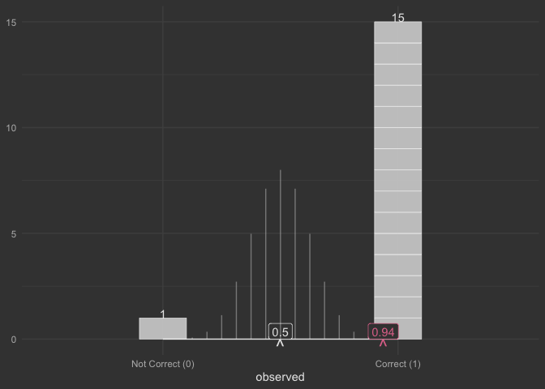
tidy_dbinom(num_trials = 16) |>
mutate(prop_success = num_successes/16)
#> # A tibble: 17 × 5
#> num_successes probability single_trial_prob num_trials prop_success
#> <int> <dbl> <dbl> <dbl> <dbl>
#> 1 0 0.0000153 0.5 16 0
#> 2 1 0.000244 0.5 16 0.0625
#> 3 2 0.00183 0.5 16 0.125
#> 4 3 0.00854 0.5 16 0.188
#> 5 4 0.0278 0.5 16 0.25
#> 6 5 0.0667 0.5 16 0.312
#> 7 6 0.122 0.5 16 0.375
#> 8 7 0.175 0.5 16 0.438
#> 9 8 0.196 0.5 16 0.5
#> 10 9 0.175 0.5 16 0.562
#> 11 10 0.122 0.5 16 0.625
#> 12 11 0.0667 0.5 16 0.688
#> 13 12 0.0278 0.5 16 0.75
#> 14 13 0.00854 0.5 16 0.812
#> 15 14 0.00183 0.5 16 0.875
#> 16 15 0.000244 0.5 16 0.938
#> 17 16 0.0000153 0.5 16 1
# donors w/ null distribution...
donors_balance_plot +
geom_binomial_null()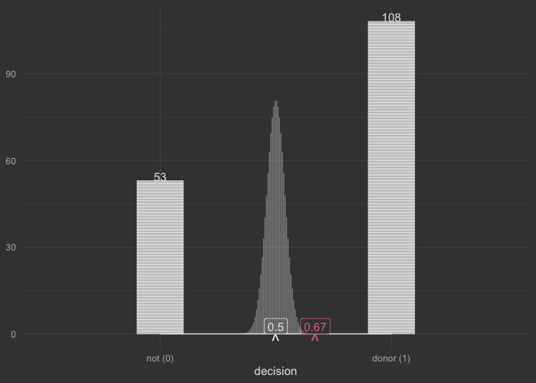
# donors with null normal approximation...
donors_balance_plot +
geom_normal_prop_null() +
geom_normal_prop_null_sds() +
stamp_eq_norm_prop()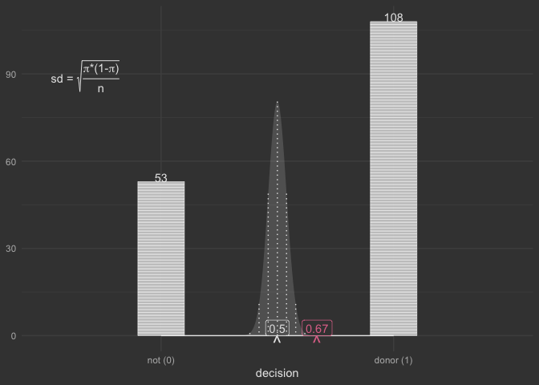
donors_null_dist_plot <- last_plot()
scissors_balance_plot +
geom_binomial_null(prob = .333)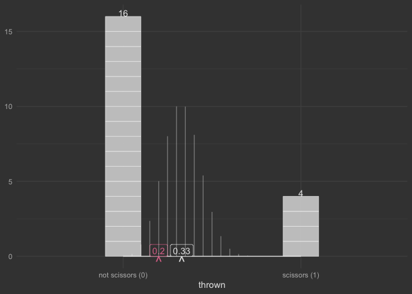
tidy_dbinom(num_trials = 20, single_trial_prob = .333) |>
mutate(prop_success = num_successes/20)
#> # A tibble: 21 × 5
#> num_successes probability single_trial_prob num_trials prop_success
#> <int> <dbl> <dbl> <dbl> <dbl>
#> 1 0 0.000304 0.333 20 0
#> 2 1 0.00303 0.333 20 0.05
#> 3 2 0.0144 0.333 20 0.1
#> 4 3 0.0431 0.333 20 0.15
#> 5 4 0.0914 0.333 20 0.2
#> 6 5 0.146 0.333 20 0.25
#> 7 6 0.182 0.333 20 0.3
#> 8 7 0.182 0.333 20 0.35
#> 9 8 0.148 0.333 20 0.4
#> 10 9 0.0983 0.333 20 0.45
#> # ℹ 11 more rows
donor_data |>
ggplot() +
aes(x = decision |>
as.logical() |>
as.numeric()) +
geom_normal_prop_null() +
geom_normal_prop_null_sds() +
stamp_prop(.67) +
stamp_prop_label(.67) +
stamp_eq_norm_prop()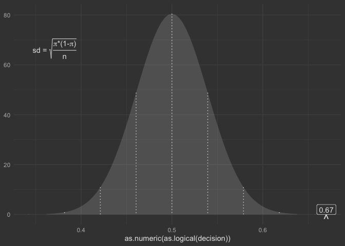
Calculating the z-score by hand
The ‘z-score’ answers the question: How many standard deviations are you away from the asserted null.
We take this question in two parts.
- What is the ‘width’ of the standard deviation (sd)
We use the formula:
- How far away from the null is the observed value in sds (this is the z score)
# calculate the z score by hand
# Step 1. How large is the standard deviation: sqrt(pi * (1-pi)/n) where pi is the asserted proportion - the null.
sd <- sqrt(.5*.5/161)
sd
#> [1] 0.03940552
# Step 2. How many standard deviations away?
# and what is my z score?
(.67 - .5)/sd
#> [1] 4.314116
# it's 4.3 -- Really far out - Big Z score!! Using prop.test to just do all this for me 🙃🚀
# number of 'successes'
x = sum(donor_data$decision == "donor (1)")
# number of 'failures'
n = length(donor_data$decision)
prop.test(x, n = n, p = .5)
#>
#> 1-sample proportions test with continuity correction
#>
#> data: x out of n, null probability 0.5
#> X-squared = 18.112, df = 1, p-value = 2.083e-05
#> alternative hypothesis: true p is not equal to 0.5
#> 95 percent confidence interval:
#> 0.5917808 0.7415370
#> sample estimates:
#> p
#> 0.6708075Part II. difference in two proportions.
read_delim("https://www.isi-stats.com/isi/data/chap5/Gilbert.txt", "\t") |>
sample_frac(replace = F) |>
janitor::clean_names() |>
rename(outcome = patient) |>
mutate(outcome = ifelse(outcome == "NoDeath", "Survived (1)", "Died (0)")) |>
mutate(gilbert_worked = ifelse(gilbert_worked == "No", "Didn't Work", "Worked")) ->
data_hospital_nurse
usethis::use_data(data_hospital_nurse, overwrite = T)Visualize raw data
facet_align <- function(var){
facet_wrap(vars({{var}}), ncol = 1)
}
data_hospital_nurse |>
ggplot() +
aes(x = outcome) +
geom_support() +
geom_stack() +
geom_prop() +
geom_prop_label() +
facet_align(gilbert_worked)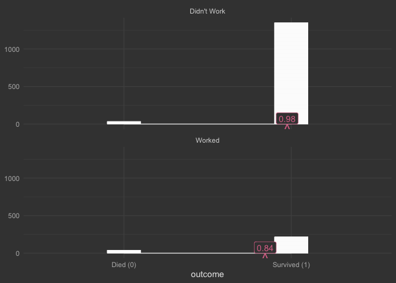
compute_layer_diff_prop_segment <- function(data, ...){
data |>
dplyr::summarise(prop = mean(x |> as.factor() |> as.numeric() -1),
.by = .data$PANEL) |>
dplyr::select(.data$prop, .data$PANEL) |>
tidyr::pivot_wider(values_from = .data$prop,
names_from = .data$PANEL,
names_prefix = "V") |>
dplyr::rename(x = V1, xend = V2) |>
dplyr::mutate(y = 0, yend = 0) |>
tidyr::crossing(data.frame(PANEL = 1:2))
}
compute_layer_diff_prop_segment_label <- function(data, ...){
data |>
dplyr::summarise(prop = mean(x |> as.factor() |> as.numeric() -1),
.by = PANEL) |>
dplyr::select(.data$prop, .data$PANEL) |>
tidyr::pivot_wider(values_from = prop, names_from = PANEL, names_prefix = "V") |>
dplyr::rename(x = .data$V1, xend = .data$V2) |>
dplyr::mutate(y = 0, yend = 0) |>
tidyr::crossing(data.frame(PANEL = 1:2)) |>
dplyr::mutate(difference = c((x - xend)) |> round(2)) |>
dplyr::mutate(label = paste0("Difference: \n", .data$difference)) |>
dplyr::mutate(x = I(c(.2, -5)), y = I(.8)) # think about another way
}
geom_prop_diff <- function(...){
qlayer(stat = compute_layer_diff_prop_segment |> qstat_layer(),
geom = ggplot2::GeomSegment |>
qproto_update(ggplot2::aes(color = from_theme(accent),
linewidth = from_theme(linewidth*3))),
...)
}
geom_prop_diff_label <- function(...){
qlayer(
geom = ggplot2::GeomLabel |>
qproto_update(aes(color = ggplot2::from_theme(colour %||% accent),
fill = ggplot2::from_theme(colour %||% paper))),
stat = compute_layer_diff_prop_segment_label |> qstat_layer(),
...
)
}
data_hospital_nurse |>
ggplot() +
aes(x = outcome) +
geom_support() +
geom_stack() +
geom_stack_label() +
geom_prop() +
geom_prop_label() +
facet_align(gilbert_worked) +
geom_prop_diff() +
geom_prop_diff_label()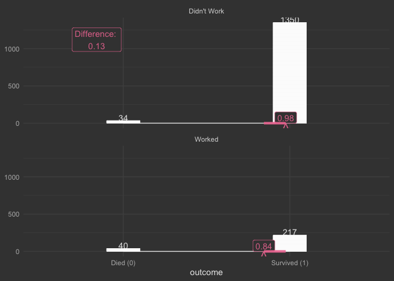
Interlude: What might have happened under the null (disassociation)
data_hospital_nurse |>
data_shuffle_var(var = outcome) |>
head()
#> # A tibble: 6 × 3
#> gilbert_worked outcome shuffled
#> <chr> <chr> <chr>
#> 1 Didn't Work Survived (1) Survived (1)
#> 2 Didn't Work Survived (1) Survived (1)
#> 3 Worked Survived (1) Survived (1)
#> 4 Didn't Work Survived (1) Survived (1)
#> 5 Didn't Work Survived (1) Survived (1)
#> 6 Worked Died (0) Survived (1)
data_hospital_nurse |>
data_shuffle_var(var = outcome) |>
ggplot() +
aes(x = shuffled) +
geom_stack() +
geom_stack_label() +
facet_align(gilbert_worked) +
geom_prop() +
geom_prop_label() +
geom_prop_diff() +
geom_prop_diff_label()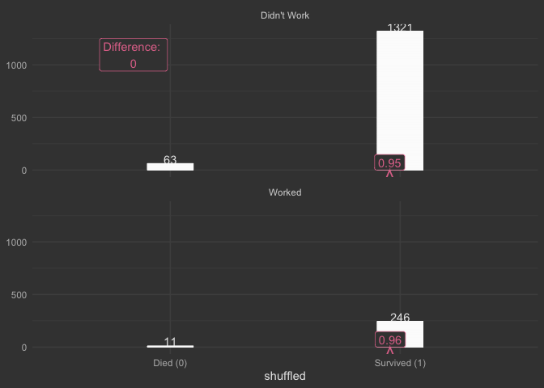
Scenario 2: Yawning
data_yawning <- read_delim("https://www.isi-stats.com/isi/data/chap5/Yawning.txt", skip = 1) |>
rename(treatment = Seeded, observed = Yawn) |>
mutate(observed = ifelse(observed == "Yawn", "Yawn (1)", "No Yawn (0)")) |>
sample_frac(replace = F)
usethis::use_data(data_yawning, overwrite = T)
data_yawning |>
distinct()
#> # A tibble: 4 × 2
#> treatment observed
#> <chr> <chr>
#> 1 Control No Yawn (0)
#> 2 Seeded No Yawn (0)
#> 3 Seeded Yawn (1)
#> 4 Control Yawn (1)
data_yawning |>
ggplot() +
aes(x = observed) +
geom_stack() +
geom_stack_label() +
geom_prop() +
geom_prop_label() +
facet_align(treatment) +
geom_prop_diff()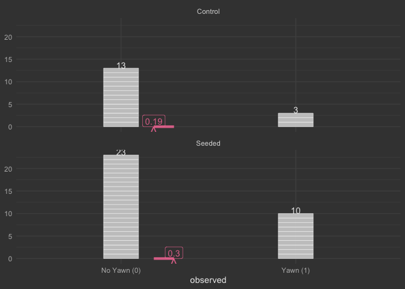
plot_yawn_diffs <- last_plot()
compute_panel_diff_normalized <- function(data, scales){
data |>
summarise(prop = outcome |> as.factor() |>
as.numeric() |> mean(),
.by = sample) |>
summarise(diff_prop = max(prop) - min(prop)) |>
mutate(group = 1, PANEL = 1) |>
mutate(x = diff_prop, y = 0) |>
mutate(label = x |> round(2))
}
# data_yawning |>
# rename()
#' @export
stamp_prop_diff_limits <- function(..., num_sds = 2){annotate(geom = "segment", x = 1, xend = -1, y = 0, yend = 0 )}
#' @export
geom_prop_diff_normalized <- function(...){qlayer(geom = GeomText |> qproto_update(aes(vjust = 1, size = 6, color = from_theme(accent))),
stat = qstat_panel(compute_panel_diff_normalized),
label = "^", ...)}
#' @export
geom_prop_diff_normalized_label <- function(...){qlayer(geom = GeomLabel |> qproto_update(aes(vjust = 0, size = 4, color = from_theme(accent))),
stat = qstat_panel(compute_panel_diff_normalized),...)}
#' @export
stamp_no_diff <- function(...){ annotate("text", y = 0,
label = "^", x = 0,
vjust = 1, size = 6, ...) }
#' @export
stamp_no_diff_label <- function(...){annotate("label", y = 0,
x = 0, label = 0,
vjust = 0, size = 4, ...)}
#' @export
stamp_eq_norm_prop_two_sample <- function(x = I(.125),
y = I(.8), ...){
ggplot2::annotate(
"text",
x = x,
y = y,
label = latex2exp::TeX(
"SE = \\sqrt{\\frac{\\hat{p}_1*(1-\\hat{p}_1)}{n_1} + \\frac{\\hat{p}_2*(1-\\hat{p}_2)}{n_2}}", output = "character"),
parse = TRUE, ...
)
}
data_yawning |>
ggplot() +
aes(outcome = observed, sample = treatment) +
stamp_prop_diff_limits() +
geom_prop_diff_normalized() +
geom_prop_diff_normalized_label() +
stamp_no_diff() +
stamp_no_diff_label() +
stamp_eq_norm_prop_two_sample() 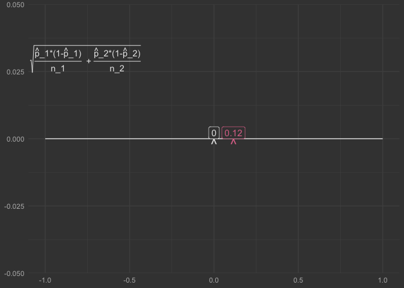
data_hospital_nurse |>
ggplot() +
aes(outcome = outcome, sample = gilbert_worked) +
stamp_prop_diff_limits() +
geom_prop_diff_normalized() +
geom_prop_diff_normalized_label() +
stamp_no_diff() +
stamp_no_diff_label() +
stamp_eq_norm_prop_two_sample() 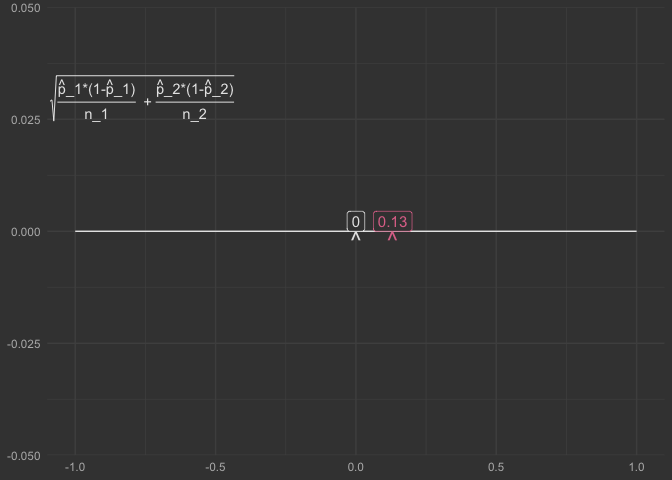
Just use prop test…
data_hospital_nurse |>
table() |>
prop.test()
#>
#> 2-sample test for equality of proportions with continuity correction
#>
#> data: table(data_hospital_nurse)
#> X-squared = 83.464, df = 1, p-value < 2.2e-16
#> alternative hypothesis: two.sided
#> 95 percent confidence interval:
#> -0.17844732 -0.08370378
#> sample estimates:
#> prop 1 prop 2
#> 0.02456647 0.15564202
data_yawning |>
table() |>
prop.test()
#>
#> 2-sample test for equality of proportions with continuity correction
#>
#> data: table(data_yawning)
#> X-squared = 0.26418, df = 1, p-value = 0.6073
#> alternative hypothesis: two.sided
#> 95 percent confidence interval:
#> -0.1781809 0.4092415
#> sample estimates:
#> prop 1 prop 2
#> 0.8125000 0.6969697Minimal Packaging
# knitrExtra::chunk_names_get()
knitrExtra::chunk_to_dir("statexpress")
knitrExtra::chunk_to_dir("raw_data_viz")
knitrExtra::chunk_to_dir("compute_prop_viz")
knitrExtra::chunk_to_dir("gen_under_null")
knitrExtra::chunk_to_dir("collections_null")
knitrExtra::chunk_to_dir("create_prop_data")
knitrExtra::chunk_to_dir("facet_align")
knitrExtra::chunk_to_dir("geom_prop_diff")
knitrExtra::chunk_to_dir("data_shuffle_var")
usethis::use_package("dplyr")
usethis::use_package("ggplot2")
devtools::document()
devtools::check(".")
devtools::install(pkg = ".", upgrade = "never")